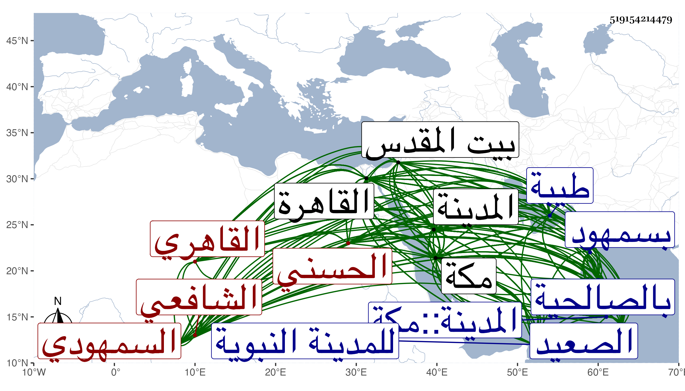

0902Sakhawi.DawLamic.ITO20230111-ara1.EIS1600.519154214479
Biography ID: 519154214479
838
علي بن عبد الله بن أحمد بن أبي الحسن علي بن عيسى بن محمد بن عيسى نور الدين أبو الحسن بن الجمال الحسني السمهودي القاهري الشافعي نزيل الحرمين والماضي أبوه وجده ويعرف بالشريف السمهودي . ولد في صفر سنة أربع وأربعين وثمانمائة بسمهود ونشأ بها فحفظ القرآن والمنهاج ولازم والده حتى قرأ عليه بحثا مع شرحه للمحلي وشرح البهجة لكن النصف الثاني منه سماعا وجمع الجوامع وغالب ألفية ابن مالك بل سمع عليه جل البخاري ومختصر مسلم للمنذري وغير ذلك ، وقدم القاهرة معه وبمفرده غير مرة أولها سنة ثمان وخمسين ولازم أولا الشمس الجوجري في الفقه وأصوله والعربية فكان مما قرأ عليه جميع التوضيح لابن هشام والخزرجية مع الحواشي الأبشيطية وشرحه للشذور والربع الأول من شرح البهجة للولي وشرح شيخه المحلي للمنهاج قراءة لأكثره وسماعا لسائره مع سماع غالب شرح شيخه أيضا لجمع الجوامع بل قرأ بعضهما على مؤلفهما مع سماع دروس من الروضة عليه بالمؤيدية وأكثر من ملازمة المناوي وكان مما أخذه عنه تقسيم المنهاج مرتين بفوت مجلس أو مجلسين في كل منهما لكنه تلفق له منهما معا والتنبيه والحاوي والبهجة بفوت يسير في كل منهما وجانبا من شرح البهجة ومن شرح جمع الجوامع كلاهما لشيخه وقطعة من حاشيته على أولهما ، ومما كتبه على مختصر المزني في درس الشافعي وعلى المنهاج في درس الصالحية ومما قرأه عليه بحثا قطعة من شرح ألفية العراقي ومن بستان العارفين للنووي وبجامع عمر وجميع الرسالة القشيرية وسمع عليه المسلسل بشرطه والبخاري مرارا بأفوات وقطعة من مسلم ومن مختصر جامع الأصول للبارزي ومن آخر تفسير البيضاوي وألبسه خرقة التصوف وقرأ على النجم بن قاضي عجلون بعض تصحيحه للمنهاج وعلى الشمس البامي قطعة من شرح البهجة مع حضور تقاسيمه في المنهاج وعلى الزين زكريا شرح المنهاج الأصلي للأسنائي وغالب شرحه على منظومة ابن الهائم في الفرائض وعلى الشمس الشرواني شرح عقائد النسفي للتفتازاني بل سمعه عليه ثانية وغالب شرح الطوالع للأصفهاني وسمع عليه الإلهيات بحثا بمكة وقطعة من الكشاف وغالب مختصر سعد الدين على التلخيص وشيئا من المطول ومن العضد شرح ابن الحاجب ومن شرح المنهاج الأصلي للسيد العبري وغير ذلك وحضر عند العلم البلقيني من دروسه في قطعة الأسنائي وعند الكمال إمام الكاملية دروسا وألبسه الخرقة ولقنه الذكر وقرأ عمدة الأحكام بحثا على السعد بن الديري وأذن له في التدريس هو والبامي والجوجري وفيه وفي الإفتاء الشهاب الشارمساحي بعد امتحانه له في مسائل ومذاكرته معه وفيهما أيضا زكريا وكذا المحلي والمناوي وعظم اختصاصه بهما وتزايد مع ثانيهما بحيث خطبه لتزويج سبطته وقرره معيدا في الحديث بجامع الولوي وفي الفقه بالصالحية وأسكنه قاعة القضاة بها وعرض عليه النيابة فأبى ثم فوض إليه حين رجوعه مرة إلى بلده مع القضاء حيث حل النظر في أمر نواب الصعيد وصرف غير المتأهل منهم فما عمل بجميعه ، ثم إنه استوطن القاهرة مع توجهه لزيارة أهله أحيانا إلى أن حج ومعه والدته في ذي القعدة سنة سبعين في البحر وكاد أن يدرك الحج فلم يمكن وجاور سنة إحدى بكمالها وكنت هناك فكثر اجتماعنا وكتب بخطه مصنفي الابتهاج وسمعه مني وكذا سمع مني غيره من تصانيفي وكان على خير كثير وفارقته بمكة بعد أن حججنا ثم توجه منها إلى طيبة فقطنها من سنة ثلاث وسبعين ولازم وهو فيها الشهاب الأبشيطي وحضر دروسه في المنهاج وغيره ، وسمع جانبا من تفسير البيضاوي ومن شرح البهجة للولي وبحث عليه توضيح ابن هشام بل قرأ عليه من تصانيفه شرحه لخطبة المنهاج وحاشيته على الخزرجية وأذن له في التدريس وأكثر من السماع هناك على أبي الفرج المراغي بل قرأ على العفيف عبد الله بن القاضي ناصر الدين صالح أشياء بالأجايز وألبسه خرقة التصوف بلباسه من عمر العرابي وكذا كان سمع بمكة على كمالية ابنة محمد ابن أبي بكر المرجاني وشقيقها الكمال أبي الفضل محمد والنجم عمر بن فهد في آخرين وبالقاهرة على سوى من تقدم ختم البخاري مع ثلاثياته بقراءة الديمي على من اجتمع من الشيوخ بالكاملية بل قرأ على النجم بن عبد الوارث في منية ابن خصيب شيئا من الموطأ ومن الشفا وأجاز له جماعة ولم يكثر من ذلك وصاهر في المدينة النبوية بيت الزرندي فتزوج أخت محمد بن عمر بن المحب ولها محرمية بالنجم بن يعقوب ابن أخي زوجها ثم فارقها وتزوج أخت الشيخ محمد المراغي ابنة الشيخ أبي الفرج وفارقها بعد مدة بعد موت أخيها ، وانتفع به جماعة من الطلبة في الحرمين وصنف في مسئلة فرش البسط المنقوشة ردا على من نازعه وقرضه له أئمة القاهرة وكذا عمل للمدينة النبوية تاريخا تعب فيه قرضه له كاتبه والبرهان بن ظهيرة وقرئ عليه بعضه بمكة وكذا ألف غير ما ذكر ومن ذلك الكتابة على إيضاح النووي في المناسك ، والتمس من صاحبنا النجم بن فهد تخريج شيء مما تقدم له ففعل وعظمه في الخطبة وزاد ومات قبل إكماله فبيضه ولده متمما لما أمكنه فيه وقدم من المدينة إلى مكة في رمضان سنة ست وثمانين رفيقا لابن العماد قبل وقوع الحريق بالمدينة فسلم من هذه الحادثة ولكن احترقت جميع كتبه وهي شيء كثير ، وسافر إلى القاهرة في موسمها رفيقا للمذكور أيضا فدخلاها ولقي السلطان فأحسن إليه بمرتب على الذخيرة وغيره بل ووقف هو وغيره على المدينة كتبا من أجله ورسم بسعايته بسد السرداب المواجه للحجرة الشريفة والمتوصل منه لدور العشرة لما كان يحصل فيه من الفساد مع معاكسة ابن الزمن له فيه وكانت المصلحة في سده ، وشهد موت ابن العماد ثم سافر لزيارة أمه فما كان بأسرع من موته بعد لقائه لها ثم توجه فزار بيت المقدس وعاد إلى القاهرة ثم إلى المدينة ثم إلى مكة فحج ثم رجع إلى المدينة مستوطنا مقتصرا على إماء وابتنى له بيتا ولقيته في كلا الحرمين غير مرة وغبطته على استيطانه المدينة وصار شيخها قل أن لا يكون أحد من أهلها لم يقرأ عليه واستقر به الأشرف بعناية البدري أبي البقاء في النظر على المجمع بمدرسته وما به من الكتب التي أوقفها فيه وصار المتكلم في مصارف المدرسة المزهرية فيها مع الصرف له من الصدقات الرومية كالقضاة وذلك مائة دينار وربما تنقص وما أضيف إليه من التدريس مما وقفه ملك الروم وانقياد الأمير داود بن عمر له في صدقاته لأهل الحرمين حين حج بل واشترى من أجله كتبا وقفها وكذا انقاد له ابن جبر وغيره في أشياء هذا لما تقرر عندهم من علمه وتدينه ومع ذلك فهو يتكسب بالبيع والشراء بنفسه وبمندوبه وربما عامل الشريف أمير المدينة ، وبالجملة فهو إنسان فاضل متفنن متميز في الفقه والأصلين مديم العمل والجمع والتأليف متوجه للعبادة وللمباحثة والمناظرة قوي الجلادة على ذلك طلق العبارة فيه مغرم به مع قوة نفس وتكلف خصوصا في مناقشات لشيخنا في الحديث ونحوه وربما أداه البحث إلى مخاشنة مع المبحوث معه وقد ينتهي في ذلك لما لا يليق بجلالته ويتجرأ عليه من لم يرتق لوجاهته ولو أعرض عن هذا كله لكان مجمعا عليه وعلى كل حال فهو فريد في مجموعه ولأهل المدينة به جمال والكمال لله . ولا زالت كتبه ترد علي بالسلام وطيب الكلام . وفي ترجمته من تاريخ المدينة والتاريخ الكبير والمعجم زيادة على ما هنا من نظم وغيره ، ومما كتبته عنه من نظمه :
| ألا إن ديوان الصبابة قد سبا | بما صب من حسن الصناعة إن سبا |
| نفوسا سكارى من رحيق شرابه | وألحاظ صب من صبابته صبا |
